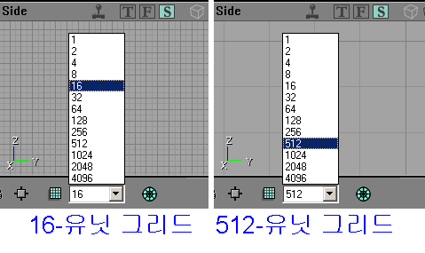
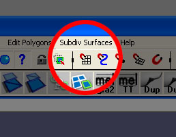
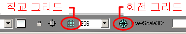
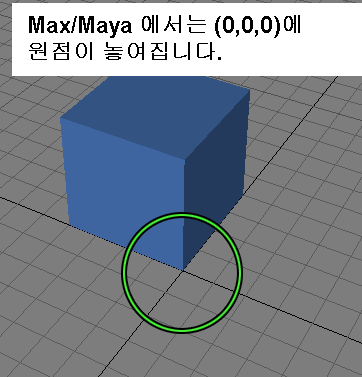
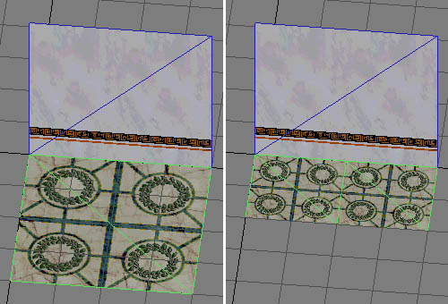

UDN
Search public documentation:
WorkflowAndModularityKR
English Translation
日本語訳
Interested in the Unreal Engine?
Visit the Unreal Technology site.
Looking for jobs and company info?
Check out the Epic games site.
Questions about support via UDN?
Contact the UDN Staff
日本語訳
Interested in the Unreal Engine?
Visit the Unreal Technology site.
Looking for jobs and company info?
Check out the Epic games site.
Questions about support via UDN?
Contact the UDN Staff
워크플로 기술과 모듈방식의 사용
문서 요약: 아트로부터 레벨 디자인으로의 파이프라인 설치 및 모듈 방식 디자인에 대한 안내. 문서 변경 내역: 원저자 - Lin, Lentz, Sturgill, Reed (DemiurgeStudios?). 이 문서의 작성에 도움이 된 글 Game Developer 의 필자 Lee Perry 에게 감사 드립니다.서론
이 문서에서는 자산의 개발, 작성 및 구현 과정의 합리화를 우선적으로 고려합니다. 아트에 대한 아이디어 및 자산을 한 사람에게서 다른 사람에게로, 아티스트로부터 레벨 디자이너, 또 프로그래머에게로 이행하는 일은 산만해지거나 혼동스러울 때가 많습니다. Unreal Engine 의 제약 내에서 작업할 경우, 이 문서에서 제시하는 요령들은 여러분의 팀이 보다 효율적이고 집중적인 방식으로 일하는데 도움이 될 것입니다.모듈식 레벨 디자인
첫째로, 모듈식 레벨 디자인이란 무엇이며 왜 이것을 사용해야 합니까? 가장 간단하게 말하자면, 모듈식 디자인이란 레벨을 높은 품질의 많은 부품들로 만들어 이 부품들을 재치있게 다시 사용하는 것입니다. 하나의 레벨 전체를 재사용할 수 없는 고유의 자산들을 사용하여 만드는 것과는 대조적이지요. 이 접근 방식에는 레벨 디자이너와 아티스트가 더 긴밀하게 협동 작업을 할 것이 요구됩니다. 그리고 이것은 엉성한 구식 방법을 사용하면 생기지 않을 약간의 새로운 두통거리를 낳을 수 있습니다. 그렇지만, 결론은 이 테크닉이 매우 강력하다는 것입니다. 모듈 방식에는 유리한 점들이 많습니다. 단지 방 하나만을 만드는 경우에는 모듈식이 아닌 방을 만드는 것이 따로따로의 부품들을 만드는 것보다 빠릅니다. 그러나 방의 수가 100 개로 늘어나면, 이 방식을 채택할 경우 그 결과로 시간이 절약되는 것을 이해하게 될 것입니다. 이 과정은 또한 레벨 디자이너들로 하여금 그들이 가장 잘 할 수 있는 일, 즉 플레이 지역 및 도형의 배치에 집중할 수 있도록 합니다. 출입문을 하나 더 만들고, 텍스처들이 제대로 줄짓게 하도록 하는 일 등에 애쓸 필요가 없습니다. 그동안에 아티스트들은 각 부품들이 알맞게 보이도록 만드는 일에 집중할 수 있습니다. 또 부품 하나를 더 좋은 모양으로 다듬으면 이 부품의 인스턴스들도 모두 그 개선된 점을 가지게 됩니다. 이것은 레벨이 이전보다 전반적으로 더 높은 디테일 레벨을 가질 수 있도록 합니다. 이 높은 디테일의 작은 부품들이 복제 및 재결합될 수 있기 때문입니다. 그러나 여기에는 결점도 있다는 것을 염두에 두어야 합니다. 이제 작업이 아티스트와 레벨 디자이너 간에 확고하게 분리되어 있기 때문에, 이들 사이에 추가 커뮤니케이션 층이 확립될 필요가 있을 것입니다. LD (레벨 디자이너)가 특별한 세트피스를 원할 경우, 그 특정 부분을 작성하기 위해 아티스트가 그 태스크에 동원되어야 하기 때문에 지연이 발생할 수 있습니다. 세트피스에 결점이 있다면 그 부품의 모든 인스턴스들도 그 결점을 지니게 됩니다; 마찬가지로, LD 가 부품을 여러 장소에서 사용하는 경우 그 부품이 ‘수정’되면 주변의 다른 부품들과 문제를 일으키거나 기이한 상호작용을 할 수 있습니다. 각 세트피스가 독립적으로 작성되기 때문에 모든 부품들에 걸쳐 일관된 스타일을 유지하는 것이 어려울 것이며, 아티스트들은 각 부분이 다른 것들과 어떻게 작용하는지 확인하기 위한 테스트를 해야 할 것입니다. 끝으로, 향상된 모듈방식이 워크플로에는 분명히 이롭지만, 아티스트들에게는 애당초 구속적인듯 합니다. 이밖에도 유념해야 할 지침 및 함정들이 더 많이 있으며, 조립된 것 같고 지루해 보이는 세계를 작성하게 되는 것이 아닐까하는 염려가 항상 있습니다. 이것들은 모두 근거가 있는 지적이지만, 모듈방식과 관련된 결점들은 비껴가기가 매우 쉬우며 결국 뚜렷한 장점으로 이어집니다. 저희는 이러한 염려 및 문제를 피하는 방법을 제시할 것입니다.규모
세계의 규모
아트-레벨 디자인 통로를 평탄하게 하는 첫 단계는 세계의 규모를 결정하는 일입니다. 모듈 방식의 컨셉을 어느 정도까지 수용할 생각인지? 예를 들면 모듈 부분을 집 크기로 할 수 있습니다. 또는 벽, 문, 창문 및 지붕 등을 만든 다음 같은 부품들을 사용해서 여러 채의 서로 다른 집들을 지을 수 있습니다. 이 선택은, 어느 정도까지는, 어떤 종류의 게임을 작성하는지에 따라 정해집니다. 플레이어가 부품들을 지나 달릴 것이라면 (경주에서처럼), 크기가 크고 디테일이 낮은 부분들을 만들 수 있습니다. 대부분의 시간을 환경 내에서 보낼 것이라면, 좀 더 복잡한 부품들을 가진 보다 작은 모듈방식이 필요합니다. 비교를 위해, 헬리콥터로 날아 지나갈 도시와 그 안에서 서성거릴 우주선의 내부를 상상해 보십시오. 이 두 가지 경우 모두에서, 모듈식 메쉬를 사용하면 적지 않게 게임 개발 속도를 높일 수 있습니다. 이 과정의 초기 단계에서 레벨 디자이나와 아티스트가 초점을 어디에 맞출 것인지에 대해 서로 의견을 교환하는 것이 극히 중요합니다. 아티스트들은 벽 부분, 건물, 도로 등 LD 가 즉시 사용할 수 있는 것들을 위한 작업을 하도록 노력해야 합니다. 레벨의 기본 틀을 갖추는 것이 최우선 과제입니다. 완벽한 외양의 출입문을 만드는 것은 좋습니다. 그렇지만 기초 작업이 끝난 후에는 사소한 조정을 할 시간이 충분합니다. 그래도, 여러분의 팀이 특별히 자신이 있다면, 위치 지정자나 미완성 아트로 레벨을 시작함으로써 워크플로를 크게 개선할 수 있습니다. 비교적 최종 제품에 가까운 기본형들이 사용된다면, LD 가 세계에 부품 배치하는 일을 시작할 수 있습니다. 그 동안에 아티스트는 그 기본형들을 다듬어, 완성되면 최종 부품들을 임시 블록의 자리에 업로드하면 됩니다.플레이어의 규모
레벨 및 정적 메쉬 부품들의 일반적인 규모가 정해지고 나면, 이제는 핵심적인 디테일 작업을 시작할 때입니다. 문의 높이/폭은 얼마로 할지? 계단의 최대 높이는? 뜀 높이는? 또 그 길이는? 이런 것들이 모두 단지 서면 계획에 그쳐서는 안되며, 일정 수준까지 테스트 되어야 합니다. 동시에 아티스트, 애니메이션 제작자 및 레벨 디자이너들이 모두 이 수치들에 의존합니다 – 구축하는 모든 것들이 이 수치들에 따라 정해져서 서로 훌륭하게 작용합니다. 그러므로 여러분은 이 값들을 일찌감치 결정해야 합니다. 그리고, 다시 말하지만 프로토타입 메쉬를 사용하여 테스트할 것을 권합니다. ‘현실 세계’에서와 달리, 게임 환경에서는 객체 및 환경이 비례가 왜곡된다는 것을 명심하시기 바랍니다. 게임에서는 사물들이 다르게 보인다는 뜻입니다. 예를 들면 게임에서는 답답한 느낌을 주지 않기 위해서 대개 천장이 더 높아야 합니다. 프로토타입, 프로토타입, 프로토타입을 거듭 강조합니다. 플레이어의 관점을 사용하십시오. UnrealEd 의 미리보기 창에 의존하여 게임 내에서의 정확한 규모 감각을 얻으려 하지 마십시오.그리드

자, 이제 그리드입니다. 레벨 디자이너의 입장에서 그리드는 근본적으로 매우 중요한 것입니다. 반면에, 아티스트는 그것이 무엇인지 조차도 모를 수 있습니다. 결론부터 말하자면 이렇습니다: 만일 한 객체가 완벽하게 그리드에 놓여있지 않으면 난데없는 문제점들이 꼬리를 물고 나타나기 시작합니다. 두 개의 세트피스가 줄지어 있도록 만드는 것이 엄청나게 지겨운 일이 되고, 모델들 (벽 등) 사이의 틈 때문에 명백한 흠들을 보기 시작할 것입니다. 이것은 레고로 집을 짓는 것과 카드로 짓는 것의 차이와 비슷합니다. 아티스트들은 이것을 적어 두십시오: 레벨 디자이너에게 레고를 줄 것. 여러분의 작품들이 멋지게 서로 맞물려진다면, 그들은 여러분에게 고맙다고 할 것입니다. 움직일 필요가 있는 3 축의 이동을 아주 조금씩 조금씩 매번 조정해야 한다면, 레벨 디자이너들은 여러분을 증오할 것입니다. 농담 아닙니다.그리드에 맞추기
이제 그리드가 아주 중요한 것이라는 것은 아는데, 어떻게하면 효율적으로 그리드 작업을 할 수 있습니까? 이에 대한 대답은 여러분의 작업 환경에 따라 조금씩 다릅니다.그리드에 맞추는 법...
Max 에서
Max 는 그리드에 맞추는 일을 쉽거나 직관적으로 할 수 있도록 하지 않습니다. 분명 가능하기는 하지만, 잘못하여 임시 그리드에서 모델을 떨어뜨리기가 매우 쉽습니다. 여기서는 Max 에서 객체들을 그리드에 유지하는 지극히 초보적인 개요를 설명하겠습니다. 그러나 이에 대해 좀더 완전하게 이해하려면 Max 에 수반된 도움말 문서를 살펴 보십시오. 먼저, 이 버튼에 익숙해지도록 하십시오: 무엇이든 스냅하도록 하기 위해서는 이 버튼을 활성화해야 합니다. 2D 스냅으로 하려면 다음과 같이 3 개의 옵션이 나타날 때까지 버튼을 누르고 계십시오:
무엇이든 스냅하도록 하기 위해서는 이 버튼을 활성화해야 합니다. 2D 스냅으로 하려면 다음과 같이 3 개의 옵션이 나타날 때까지 버튼을 누르고 계십시오:
 이제 절반은 끝났습니다. 이제 이 자석 모양 버튼들을 오른 클릭하면 Grid and Snap Settings (그리드와 스냅 설정) 윈도우가 나타날 것입니다. Home Grid (홈 그리드) 탭을 열어 Grid Spacing (그리드 간격) 필드를 적절한 값으로 설정하십시오. 이제 뷰포트 중의 하나에 커서를 올리면 아이콘이 다음과 같이 파랑색 박스로 둘러싸여 있는 것을 보게될 것입니다:
이제 절반은 끝났습니다. 이제 이 자석 모양 버튼들을 오른 클릭하면 Grid and Snap Settings (그리드와 스냅 설정) 윈도우가 나타날 것입니다. Home Grid (홈 그리드) 탭을 열어 Grid Spacing (그리드 간격) 필드를 적절한 값으로 설정하십시오. 이제 뷰포트 중의 하나에 커서를 올리면 아이콘이 다음과 같이 파랑색 박스로 둘러싸여 있는 것을 보게될 것입니다:
 이제 메쉬를 이동할 때 이 파랑색 상자 내에서부터 이동하기 시작하면, 그리드의 교차점에 스냅하려 합니다. 주의: 메쉬가 파랑색 네모 안에 있을 때 이동하려고 하면, 그래도 여전히 스냅하기는 하지만 그리드의 바로 아래로 스냅하게 됩니다.
이제 메쉬를 이동할 때 이 파랑색 상자 내에서부터 이동하기 시작하면, 그리드의 교차점에 스냅하려 합니다. 주의: 메쉬가 파랑색 네모 안에 있을 때 이동하려고 하면, 그래도 여전히 스냅하기는 하지만 그리드의 바로 아래로 스냅하게 됩니다.
Maya 에서
Maya 에서 그리드에 맞추기 과정은 상당히 간단합니다. 먼저 그리드가 올바른 척도로 설정되어 있는지 확인해야 합니다. 그리드의 척도를 변경하려면 Display 메뉴 아래에 있는 Grid 옵션 박스를 클릭하십시오. 그리드가 정정되면 스냅을 시작할 수 있습니다. 화면의 상단에 있는 툴바에서 Grid Snap 버튼을 토글하는 것이 가장 간단한 방법일 것입니다. 이 버튼은 다음과 같은 모양입니다.
그리드가 정정되면 스냅을 시작할 수 있습니다. 화면의 상단에 있는 툴바에서 Grid Snap 버튼을 토글하는 것이 가장 간단한 방법일 것입니다. 이 버튼은 다음과 같은 모양입니다.

그러나이것은 모든 것들이 다 그리드에 스냅되도록 합니다. 이것은 메쉬를 배치하는데는 좋지만 정점들을 미세 조정하는데는 좋지 않습니다. "X" 키를 누르고 있어도 그리드 스냅이 유효화됩니다. 이 방법을 사용하면 작업중에 스냅하기를 쉽게 켰다 껐다 할 수 있습니다.Unreal 에서
Unreal 에서 그리드를 사용하기 위해서는, Unreal Ed 인터페이스의 맨 밑에 잇는 그리드 버튼을 선택하기만 하면 됩니다:
두 종류의 그리드가 있는 것을 유심히 보십시오. 어떤 경우에도 절대로 CARTESIAN GRID (직교 그리드)를 무효화해서는 안됩니다. 도형이 그리드에서 떨어졌을 경우, 도형 속성의 Movement 탭에서 수동으로 위치 좌표를 입력하지 않는 한 그리드를 재정렬하는 것이 거의 불가능해집니다. BSP 도형을 처리할 때 이 그리드를 무효화하는 것은 특히 위험할 수 있습니다. Unreal 단위의 불과 몇분의 1 만 그리드에서 떨어져도 BSP 홀의 주요 원인의 하나가 되기 때문입니다. Rotation Grid (회전 그리드) 는 그다지 위험하지 않으며, 때로는 무효화 하는 것이 (나무 등)의 유기체를 더 많이 정돈하는데 도움이 됩니다. 그렇지만 모듈식 디자인에서는 Rotation Grid 를 유효화하는 것뿐만 아니라 그 gird size (그리드의 크기) 도 증가하는 것이 좋습니다. 그리드 크기를 설정하려면 Advanced Options 메뉴를 열어 (view 밑에 있는) 다음 탭을 확장하십시오: Editor --> Rotation Grid --> RotGridSize Pitch, Roll, 및 Yaw 의 값에는 Urus (Unreal Units) 가 사용됩니다. 따라서 회전 그리드를 90 �도로 설정하려면 그 값으로 16384 를 입력해야 합니다. 90 �도 회전그리드는 아주 쉽게 직각 부품들을 올바른 각도로 줄짓게 합니다. 일련의 부품들을 45 �도 각도로 하고 싶다면, Movement 속성에서 수동으로 Yaw 를 8192 Urus (16384 / 2) 로 조정한 다음 회전 그리드를 사용하여 뷰포트에서 그것을 회전하면 됩니다.
Pitch, Roll, 및 Yaw 의 값에는 Urus (Unreal Units) 가 사용됩니다. 따라서 회전 그리드를 90 �도로 설정하려면 그 값으로 16384 를 입력해야 합니다. 90 �도 회전그리드는 아주 쉽게 직각 부품들을 올바른 각도로 줄짓게 합니다. 일련의 부품들을 45 �도 각도로 하고 싶다면, Movement 속성에서 수동으로 Yaw 를 8192 Urus (16384 / 2) 로 조정한 다음 회전 그리드를 사용하여 뷰포트에서 그것을 회전하면 됩니다.
그리드 레벨
그리드를 위한 세트피스를 작성할 때는 그리드가 점점 더 낮은 레벨로 세분될 수 있다는 것을 염두에 두어야 합니다. 기본 그리드 레벨 256 유닛으로 작업하기로 한 경우에는, 256 을 나눈 수도 이 256 그리드에 잘 맞습니다. 그리드 설정은 2 의 제곱으로 나눠지므로, 이론적으로는 오직 1x1 그리드에만 맞는 (예를 들어 29 유닛 크기) 아이템을 만들 수 있습니다. 그렇지만 오직 낮은 레벨의 그리드에만 맞는 객체를 만드는 것은 LD 에게 큰 골치거리가 되므로 삼가야 합니다. 29 유닛의 객체는 32 유닛 크기로 늘려야 합니다. 아티스트에게는 이 정도의 변경은 큰 차이를 보이지 않겠지만, 레벨 디자이너의 일은 훨씬 수월해집니다. 물론 어떤 객체들은 더 작은 그리드 레벨에 놓여야 합니다. 집은 256 그리드에 놓을 수 있지만 그 집의 방에 있는 테이블 위의 촛대는 2 그리드에 놓일 것입니다. 다만, 그리드가 작을수록 레벨 디자이너가 객체를 배치하는 것이 더 힘들어진다는 것만 기억하십시오.`…의 위에' 라는 개념
그리드 위에 놓여질 아이템을 작성할 때의 좋은 경험법칙 하나는, 그 아이템 위에 다른 객체가 올려질 것인지의 여부를 상상해보는 것입니다. 만일 그렇다면, 그 객체의 맨 위 부분도 그리드에 놓여져야 한다는 것을 아실 것입니다. 아주 쉽지요? 게임에서 어떻게 이 법칙을 적용할 수 있는지, 3 가지 예를 보도록 하겠습니다.- 가지 촛대: 이것의 밑바닥이 그리드에 놓여져야 한다는 것은 명백합니다. 그렇지만 가산점을 얻고 싶다면 초를 꽂는 뾰족한 지점들도 그리드 위에 놓는 것을 고려해야 합니다. 이것은 초가 촛대에서 정확한 지점에 꽂히도록 만드는 옵션입니다.
- 책장: 책장 위에는 다른 물건들이 올려져 있을 수 있으므로, 책장의 상단이 그리드에 놓여지도록 만드십시오. 그렇다고 선반을 잊어서는 안됩니다. 선반 위에도 아이템들이 놓여질 수 있으므로 각 선반을 그리드에 맞춰 정렬하도록 하십시오.
- 콘크리트 벽돌: 블록 또는 모든 종류의 벽돌들을 포개 쌓을 수 있는 것들이기 때문에 생각을 좀 더해야 합니다. 벽돌을 만들 경우, 이것은 당연히 쌓을 수 있어야 합니다 – 상단 및 하단이 모두 그리드 위에 맞추어져야 합니다. 그러나 벽돌을 옆으로 뒤집는다면 어떻게 되겠습니까? 벽돌이 이 경우에도 그리드 위에 떨어진다면 훨씬 더 융통성 있고 쓸모있을 것입니다.
 위의 그림에서 빨강과 파랑 선들은 모두, 가로 및 세로로, 그리드 위에 맞추어져야 하는 지역을 나타냅니다.
위의 그림에서 빨강과 파랑 선들은 모두, 가로 및 세로로, 그리드 위에 맞추어져야 하는 지역을 나타냅니다.
`... 바로 옆에"
이것은 `..의 위에' 법칙의 결과로 생기는 것입니다. 이것은 `..의 위에' 만큼 중요하지는 않지만 유념해 둘만한 점입니다. 만일 다른 물체에 눌러 붙일 수 있는 세트피스가 있다면, 이것도 그리드 위에 맞추어지도록 해둘만 합니다. 예를 들어, 제가 빌딩을 작성한다면 그 빌딩의 모든 측면을 그리드에 맞추도록 노력할 것입니다. 그러면 나중에 그 빌딩에 뭔가 추가할 경우 (차양, 선반, 창틀 등), Unreal 에서 성가신 조정을 할 필요없이, 빌딩의 측면에 이런 것들을 스냅할 수 있습니다 .세트피스의 재사용
다음은 모듈방식의 핵심입니다. 세트피스들을 재사용할 수 있기 때문에 실제적 및 기술적 양 측면에서 여러가지 큰 이점을 누릴 수 있습니다.- 부품의 재사용은 전혀 메모리 공간을 더 차지하지 않습니다. 따라서 더 많은 RAM 이 더 높은 품질의 메쉬/텍스처, 또는 AI 등의 비용에 사용될 수 있습니다.
- 레벨 또는 지역 전체에 걸쳐 같은 부품을 사용하는 것은 게임의 외형과 느낌을 통일하는데 도움이 됩니다. 올바르게 사용된다면 한 공간 또는 한 기능 내에서 여러 장소들을 한데 묶는데 크게 도움이 됩니다.
- 이 부품들을 수십 번이라도 사용할 수 있기 때문에, 한 번 쓰고 버려지는 저품질의 메쉬를 많이 만드는 대신 자주 쓰일 수 있는 고품질의 메쉬를 만드는데 시간을 할애할 수 있습니다.
- 부품들을 재사용할 수 있기 때문에 필요한 총 부품의 수가 더 적어집니다. 그 결과 시간 및 비용이 절약됩니다.
미러 하기
모듈식 부품들을 분별있게 사용한다고 해도, 레벨 내에서 똑같은 모양이 반복되는 것을 보게 됩니다. 이를 줄이는 한 방법은 메쉬를 배치할 때 이것을 미러하는 것입니다. 이것만으로도 유사성을 깨뜨리는데 도움이 됩니다. 거의 같은 패턴의 부품들을 (벽 섹션 등) 사용하여 작업하는 경우에는 나란히 있는 것들을 미러해 보십시오. 위의 그림에서, 왼편 그림에 이미 정적 메쉬의 반복이 일어나는 것을 볼 수 있습니다. 이것이 미러하지 않고 사용된다면 패턴이 이루어지는 것을 더 분명히 보게될 것입니다. 오른쪽에서는 메쉬가 미러된 다음 회전되어 미러하기를 변화시키고 있습니다.
위의 그림에서, 왼편 그림에 이미 정적 메쉬의 반복이 일어나는 것을 볼 수 있습니다. 이것이 미러하지 않고 사용된다면 패턴이 이루어지는 것을 더 분명히 보게될 것입니다. 오른쪽에서는 메쉬가 미러된 다음 회전되어 미러하기를 변화시키고 있습니다.
수직 미러와 스평 미러
미러하기는 모든 축에 대해 실시할 수 있다는 것을 기억하십시오. 이미 옆으로 미러하고 있다면, 메쉬를 수직으로도 미러할 수 있는 옵션을 계획해 보십시오. 물론 이것은 모델 및 텍스처 모두에 좌우되는 것이므로, 자산의 작성에 여러 아티스트들이 관여되어 있다면 이들이 모두 이 점에 유의하도록 다짐해 두십시오.텍스트
이것은 생각해보면 자명한 일입니다. 무엇인가 미러되도록 구축하고 있다면, 텍스트는 절대 안됩니다. 스크립트가 이해할 수 없는 외계인 언어로 되어 있지 않은 한, 텍스처에 텍스트를 추가하는 일은 하지 마십시오. 그렇지 않으면 명백한 미러잉의 효과를 실감하게 됩니다.디자인의 변종들
모듈식 부품들을 만들 때 워크플로의 처리 속도를 높일 수 있는 한 가지 멋진 비결은, 약간씩 다른 모델이나 텍스처의 디자인 변종들을 만드는 것입니다. 이것들은 이미 제작 파이프라인 내에 있기 때문에, 1 개의 메쉬/텍스처의 변형을 여러 개 만드는 것이 각각 다른 시간에 3 개의 메쉬를 따로 만드는 것보다 빠를 때가 많습니다. 약간씩 다른 이 부품들로 훨씬 더 시각적으로 흥미있는 레벨을 구축할 수 있습니다. 이렇게 하면, 동시에 아티스트 및 레벨 디자이너의 능률 수준도 올라갑니다. 이것은 레벨의 디자인에 살을 붙이는데도 도움이됩니다. 주 테마를 구축한 다음 그 다음의 두세가지 변형으로 이를 지원할 수 있기 때문입니다. 만일 아티스트의 변형 메쉬 및/또는 텍스처들이 서로 나란히 있다면, 메쉬 속성의 Display 메뉴 밑에 있는 Skins 배열과 StaticMesh? 필드를 사용하여 레벨 디자인에 여러가지 아트 자산들을 쉽게 바꿔 넣거나 뺄 수 있습니다. 정적 메쉬는 이 StaticMesh 필드를 사용하여 쉽게 교체할 수 있습니다. 단지 텍스처만을 바꿔 넣고 싶다면 과정이 약간 더 복잡해집니다. 우선, 메쉬에 가지고 있는 텍스처들 중 변경하고자 하는 텍스처에 이르기가지의 수만큼 배열 필드를 추가해야 합니다. 예를 들어, 사용하고 있는 정적 메쉬가 5 개의 텍스처를 가지고 있고 그 중 3 번째의 텍스처를 변경하고 싶다면, 3 개의 텍스처 필드를 추가해야할 것입니다. 그 다음 Texture 브라우저에서 이 새 텍스처를 선택하고 Skins 배열 필드에서 "Use" 버튼을 클릭하여 그 텍스처를 변경합니다.
정적 메쉬는 이 StaticMesh 필드를 사용하여 쉽게 교체할 수 있습니다. 단지 텍스처만을 바꿔 넣고 싶다면 과정이 약간 더 복잡해집니다. 우선, 메쉬에 가지고 있는 텍스처들 중 변경하고자 하는 텍스처에 이르기가지의 수만큼 배열 필드를 추가해야 합니다. 예를 들어, 사용하고 있는 정적 메쉬가 5 개의 텍스처를 가지고 있고 그 중 3 번째의 텍스처를 변경하고 싶다면, 3 개의 텍스처 필드를 추가해야할 것입니다. 그 다음 Texture 브라우저에서 이 새 텍스처를 선택하고 Skins 배열 필드에서 "Use" 버튼을 클릭하여 그 텍스처를 변경합니다.
 Skins 배열에서 "None" 이라는 라벨이 붙은 것을 포함하는 나머지 텍스처들은 StaticMesh 브라우저 내의 materials 배열에서 설정된대로 기본 텍스처로 남아있게 됩니다.
Skins 배열에서 "None" 이라는 라벨이 붙은 것을 포함하는 나머지 텍스처들은 StaticMesh 브라우저 내의 materials 배열에서 설정된대로 기본 텍스처로 남아있게 됩니다.
세트피스의 융통성
이것은 ‘상식적인’ 요령 가운데 하나이지만 잠깐 언급하겠습니다. 레벨 디자이너들에게 충분한 빌딩 블록, 부품 섹션들 및 원재를 주면, 그들은 이 부품들을 매우 재미있는 방법으로 재결합할 수 있습니다. 그들이 뜻하지 않았던 식으로 결합하는 경우가 많습니다. 벽을 바닥 섹션으로 사용하고 (다른 스케일로 사용하겠지요?), 화분 식물을 멀리 있는 나무로, 파이프를 난간으로서 사용하는 등… 풍부한 상상력으로 기존의 부품들을 사용하는 것은 여러분이 가지고 있는 아트 세트는 물론 시스템 리소스를 더 많이 이용할 수 있도록 합니다.원점
아직 원점 위치의 관리를시작하지 않았다면, 이제 시작할 때입니다. 그리드 위에 객체들을 줄짓는 일은 어느 정도 이 원점 위치에 좌우되며, 그 중요성은 아무리 강조해도 지나치지 않습니다. 주: Max 와 Maya 의 피벗 포인트는 UnrealEd 의 피벗 포인트로 변환되지 않습니다. UnrealEd 에서의 피벗 포인트는 언제나 내보내기된 메쉬에 상대적으로, 직접 모델링 패키지의 원점에 (0,0,0) 설정됩니다. 이것은 피벗 포인트를 오프셋하고 싶은 경우, 피벗 포인트를 이동하는 것이 아니라 (패키지 내에서) 메쉬를 원점으로부터 떼어 놓아야 한다는 것을 의미합니다.
많은 메쉬의 경우, 원점의 위치는 모델의 중심이 (모델링 패키지에서 제공하는 것) 아니라 메쉬의 아래 모퉁이 가운데 하나여야 합니다. 원점이 모퉁이에 배치되면 한 모퉁이는 항상 그리드 위에 있게 되므로 회전 및 스트레칭을 보다 더 유연하게 할 수 있습니다. 원점이 메쉬의 중심에 있는 경우에는, 메쉬를 회전하면 양쪽 모퉁이가 그리드에서 떨어져서 양 모퉁이를 한 번에 다시 정렬해야 합니다.
- 이 각진 틈을 메우고 싶습니다.
- 원점이 한가운데 있다면 객체를 그리드에서 떼어내 회전한 다음 2 방향으로 잡아당겨서 정확한 위치를 짐작해야 합니다. 이것은 시간이 많이 걸리고 성가신 일입니다.
- 메쉬의 원점이 모퉁이에 있다면 회전하더라도 메쉬가 그리드에 붙어 있습니다.
- 한 방향으로만 잡아당기면 되므로, 얼만큼 잡아당기면 충분한지 알기 쉽습니다.
그밖의 문제들
지역간의 이행
레벨을 작성할 때는, 이어지는 2 지역의 아트 세트와 그 둘을 잇기 위한 이행을 어떻게 구축할 것인지에 대해 생각하는 것이 좋습니다. 계획을 적절하게 세우면, 레벨 디자이너가 양쪽의 아트 세트를 조금씩 사용함으로써 아트 자산을 확장하여 중간 이행지역을 만들 수 있을 것입니다. 여기에는 양 레벨의 전반적인 느낌을 (스타일 훼손 없이) 일정 수준으로 유지할 수 있으며, 또 아트 자산을 조금 더 활용할 수 있는 이중의 이점이 있습니다. 물론 이 지역을 위해 특정 부품이 구축되어야 합니다. 그렇지만 이 경우에도 소재의 재가공 및 재결합 컨셉이 작성 과정의 속도를 높이는데 도움이 됩니다.원통
이것은 매우 간단합니다. 원통형의 (수직) 형태를 작성하는 경우, 간편한 비결은 총 면의 수가 4 의 배수가 되도록 하는 것입니다. 이렇게 하면 이 면들이 이음새 문제 없이 그리드 위에 줄지어지므로 회전할 필요가 있을 경우 크게 도움이 됩니다.뒷면의 폴리곤
플레이어들에게 절대 보일 일이 없는 부품 (방 내부의 벽 섹션등)을 만드는 경우에는, 이 메쉬의 뒤편에 폴리곤을 낭비할 이유가 없습니다. 그러나 LD 가 이것을 어딘가 사용할 곳을 발견하지 못할 것이라고 장담할 수 있습니까? 뒷면/바닥 등을 폴리가 없는 것으로 결정하기에 앞서 그 메쉬의 2 차 용도에 대해 신중하게 생각하십시오.T 형 교차
T 형 교차는 두 모듈식 세트피스가 또 하나의 정점 옆에 있지 않고, 정점들이 한 가장자리를 따라 접하면서 서로 이웃해 있을 때 생기는 시각적 결점입니다. 설명하기가 좀 어려운데, 다음 그림을 보십시오. T 형 교차가 발생하면, 서로 나란히 놓여있어야 할 메쉬가 적절한 방법으로 일치시킬수 있는 정점을 가지고 있지 않은 경우, 때로 아티스트가 비난을 받습니다. 이것은 반드시 처리해야 할, 상당히 귀찮은 문제입니다. 그러므로 아티스트들은 주의를 기울이십시오: 모듈 섹션을 만들기에 앞서 철저히 계획을 세우세요. 이 경우에는 벽과 바닥이 주범입니다.
레벨 디자이너들은 완벽하게 훌륭한 메쉬에서도 쉽사리 T 형 교차를 일으킬 수 있습니다. 예를 들어, 아트 세트에 512 x512 의 벽 섹션에 맞추기 위한 512 x512 의 바닥 섹션이 있다면, 여기에 아무런 결함이 없을 것입니다. 그러나 LD 가 바닥의 크기를 반으로 줄이고 타일은 2 배로 사용하기로 결정한다면 벽의 한가운데에 T 형 교차가 생기는 결과를 낳게 됩니다.
T 형 교차가 발생하면, 서로 나란히 놓여있어야 할 메쉬가 적절한 방법으로 일치시킬수 있는 정점을 가지고 있지 않은 경우, 때로 아티스트가 비난을 받습니다. 이것은 반드시 처리해야 할, 상당히 귀찮은 문제입니다. 그러므로 아티스트들은 주의를 기울이십시오: 모듈 섹션을 만들기에 앞서 철저히 계획을 세우세요. 이 경우에는 벽과 바닥이 주범입니다.
레벨 디자이너들은 완벽하게 훌륭한 메쉬에서도 쉽사리 T 형 교차를 일으킬 수 있습니다. 예를 들어, 아트 세트에 512 x512 의 벽 섹션에 맞추기 위한 512 x512 의 바닥 섹션이 있다면, 여기에 아무런 결함이 없을 것입니다. 그러나 LD 가 바닥의 크기를 반으로 줄이고 타일은 2 배로 사용하기로 결정한다면 벽의 한가운데에 T 형 교차가 생기는 결과를 낳게 됩니다.

레벨에서 이런 일이 발생했다면 당황하지 마십시오. 이것은 보기 흉하지만 치명적인 맵 오류의 원인이 되는 것은 아닙니다. 제일 먼저, 메쉬의 수정을 시도해볼 수 있습니다. 메쉬의 한 면을 바둑판 모양으로 만들어 정점들이 일치하도록 하는 것은 보기 흉한 해결 방법입니다. 또 한가지 옵션은 다른 정적 메쉬를 사용하여 접합된 곳을 감추는 것입니다. 출입문, 기둥 등도 모두 이 시각적 흠을 가리는데 사용될 수 있습니다. 마지막으로 남은 옵션은 메쉬 (및 T 형 교차) 뒤 세계 공간의 배경 색을 바꾸는 것입니다. T 형 교차를 볼 때는 사실상 메쉬 사이의 틈을 통해 보는 것이기 때문에 배경을 뭔가 해롭지 않은 것으로 바꾸면 그 틈을 식별하기가 더 어려워집니다.
또 한가지 옵션은 다른 정적 메쉬를 사용하여 접합된 곳을 감추는 것입니다. 출입문, 기둥 등도 모두 이 시각적 흠을 가리는데 사용될 수 있습니다. 마지막으로 남은 옵션은 메쉬 (및 T 형 교차) 뒤 세계 공간의 배경 색을 바꾸는 것입니다. T 형 교차를 볼 때는 사실상 메쉬 사이의 틈을 통해 보는 것이기 때문에 배경을 뭔가 해롭지 않은 것으로 바꾸면 그 틈을 식별하기가 더 어려워집니다.
모듈방식의 결론
모듈식 부품을 만들 때 가장 우려되는 점은 플레이어가 그 부분이 재사용되고 있다는 것을 알아차리지 않을까 하는 두려움입니다. 이것은 좋지 않은 상황입니다. 조잡해 보이기 때문만이 아니라 플레이어가 다른 곳과 똑같아 보이는 지역에서 길을 잃을지도 모르기 때문이기도 합니다. 지역들이 비슷한 부품들을 공유할 때는 시각적으로 구별되도록 특별한 노력을 기울여 보십시오. 그 방법에는 여러가지가 있습니다. 지역들이 서로 다른 외형을 가지도록 하려면 부품들을 각기 다른 조합으로 사용하기, 각각 다른 방식의 조명 (유색 광원, 프로젝터 등)을 사용하기, 커스텀 도형을 만들어 서로 위치 떼어놓기, 또는 모듈식 도형의 텍스처를 다른 것으로 바꾸기 등을 사용할 수 있습니다. 모듈식 구조가 다소 제한적이고 타일깔기에 취약하다는 것은 부인하기 어려운 사실입니다.기본적으로 한 번 밖에 사용하지 않는 커스텀 도형의 작성은 대부분의 팀에서 용납할 수 없는 일이며, 모듈 방식은 비교적 작은 아트 팀으로 세계를 고품질 메쉬로 채우는 효율적인 방법이라는 것 역시 사실입니다. 어느 정도의 계획과 실제적인 경험이 수반되면, 모듈 방식이 워크플로를 크게 향상시키는 방법이며 단기적 및 장기적 맵 개발에 있어서 훌륭한 자산이 된다는 것을 발견하게 될 것입니다.캐릭터 워크플로
Unreal 용으로 뼈대 캐릭터 메쉬를 만드는 것은 평균보다 많이 어렵지 않습니다. 이러한 모델에 대해서는 워크플로가 매우 단순합니다.디자인
이것은 워크플로에 잇어서 매우 중요한 단계입니다. 아티스트가 작성한 캐릭터가 레벨 디자이너가 작성한 환경에 거주해야 하기 때문에, 이 두가지가 서로 훌륭하게 맞지 않을 가능성이 있습니다. 캐릭터의 척도가 정확하게 조정되어 세트피스의 사이즈에 대해 알맞도록 확실히 하는 것이 중요한 첫 단계입니다. 처음부터 확실히 해두면 장차 많은 시간을 절약할 수 있게 됩니다. 이 단계는 현실 세계의 값을 Unreal 의 값으로 변환하는 척도를 결정하기에 좋은 시점입니다. 1 피트는 몇 Unreal 유닛이 되는지? 게임내의 관점에서 생기는 왜곡을 보충하기 위해 이 값들이 조작되어야 할 것인지?모델링
초기 디자인 범위가 정해지면 모델 작성자가 일을 시작할 수 있게 됩니다. 이 단계는 피하기 어려운 장애물 가운데 하나입니다. 어떤 사람들은 이 단계에서 할 일이 없지만 (텍스처 아티스트, 애니메이터 등) 모델이 완성되기까지 기다리는 수밖에 없습니다. 가능하다면 이 시간을 벽이나 바닥의 텍스처 또는 기존 메쉬의 대체 텍스처 등, 캐릭터에 의존하지 않는 자산의 작성에 활용할 것을 권합니다.텍스처
모델링이 끝나면 개발의 제 2 단계를 진행할 수 있습니다. 모델을 언랩하는 것이 논리적 다음 단계입니다. 이것은 모델에서 오류나 나쁘게 변한 얼굴 등을드러내주는 좋은 과정입니다. 모델의 언랩이 끝나면 텍스처 아티스트에게 UVW 매핑이 건네집니다. UVW 언랩하기와 텍스처링은 모델이 완성된 후에는 개발 주기의 어느 시점에서라도 행해질 수 있습니다. 이것은 애니메이션 이전, 이후, 또는 애니메이션과 동시에 할 수 있다는 듯입니다. 심지어는 Unreal 에 들여온 다음에 해도 됩니다. 계속해서 사소한 것들을 변경하고 변경된 .PSK 를 다시 내보내기하는 것은 어려운 일이 아닙니다. 물론 텍스처 팩에서 텍스처를 변경하는 것도 별것 아닙니다.애니메이션
모델의 리깅은 텍스처와 동시에 할 수 있습니다. 뿐만 아니라 애니메이션이 진행되는 동안 계속 리깅을 변경하는 것도 가능합니다. 다시 내보내기 하는데 필요한 것은 .PSK 파일이 전부이기 때문입니다. 워크플로의 속도를 높이려면, 모델에 대해 빠른 `dirty' 리깅 및/또는 애니메이션을 하여 레벨 디자이너가 이것을 레벨에 배치하여 프로토타입을 만들도록 할 수도 있습니다. 레벨 디자이너들이 이 작업을 하는 동안 애니메이터들은 리깅을 다듬고 애니메이션을 고칠 수 있습니다. 이 일들이 만족스럽게 끝나면, 남은 일은 변경된 .PSA 와 .PSK 를 .UKX 파일 내로 다시 가져오기 하는 것 뿐입니다. 개발 주기의 나중 단계에서 애니메이션을 다시 손봐야하는 일을 피하기 위해 중요한 점 한 가지는 세계에서의 다양한 객체와 액션의 기준을 확립하는 것입니다. 문의 손잡이는 어느 높이에 있게 될 것인지? 테이블의 높이는? 의자 시트는? 계단은 얼마나 높게 할 것인지? 이러한 수치들을 조기 단계에서 정해두고 이를 고수한다면 이전 애니메이션을 고치는 분량이 훨씬 줄어들 것입니다.최적화의 일반 규칙
이 섹션에서는 모듈식 메쉬가 빠르게 렌더되도록 하는 방법에 대한 개요를 제시합니다. 속도 향상을 위해서는 LevelOptimization 문서도 꼼꼼히 읽어 보십시오. 약간의 간단한 규칙을 따르면 같은 프레임 속도로 훨씬 더 많은 수의 삼각형을 가질 수 있습니다. 이 규칙들은 일반론이며, 실제에서도 항상 사실이라고 할 수는 없습니다.메쉬가 빠르게 렌더되도록 만드는 것에 대한 자세한 설명은 MeshOptimization 문서를 참고하십시오. "stat render" 를 살펴본 후 다음의 방법을 사용하십시오.- 각 메쉬에서 가능한 한 적은 소재를 사용하십시오.
- 메쉬가 중복되는 소재를 가지지 않도록 하십시오. StaticMesh? 브라우저에서 각 메쉬의 소재 목록을 살펴보고 같은 소재가 두 번 나타나지 않도록 하십시오.
- 예를 들어 초원을 만들 경우 등에 저폴리 메쉬가 지나치게 많아지는 것을 피하십시오. 대신 이 메쉬들을 한 개의 커다란 메쉬로 합치십시오. 그러나 이 컨셉을 지나치게 사용하지는 마십시오. 엔진은 메쉬의 한 부분만은 컬하지 못하며, 전체를 컬해야 한다는 것을 기억하십시오.
- 정적 메쉬 텍스처에 될 수 있으면 bAlphaTexture 대신 bMaskedTexture 를 사용하십시오. 알파된 텍스처는 정렬이 요구됩니다. * 정적 메쉬를 모듈방식을 방해하지 않는 범위 내에서 되도록 크게 유지하십시오. 삼각형당 렌더링 시간을 밀리세컨드로 환산한 “섹션”의 이상적인 크기는 1000 에서 2000 삼각형 사이입니다. 섹션은 소재들의 집합입니다.
Batched 렌더링 특유의 최적화
- 화면상의 소재 수를 가능한 한 적게 유지함으로써, 일괄처리작업의 수를 최대한 적게 유지합니다.
UnBatched 렌더링 특유의 최적화
- 작은 메쉬들이 고립된 위치에 있는 경우에는 하나의 큰 메쉬로 결합합니다. 메쉬들은 모두 함께 컬된다는 점을 기억하십시오. 예를 들어 100 개의 개별 풀 메쉬를 하나의 메쉬로 줄이면 성능이 크게 향상됩니다.